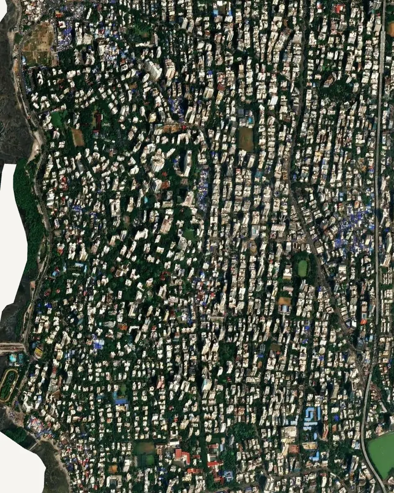
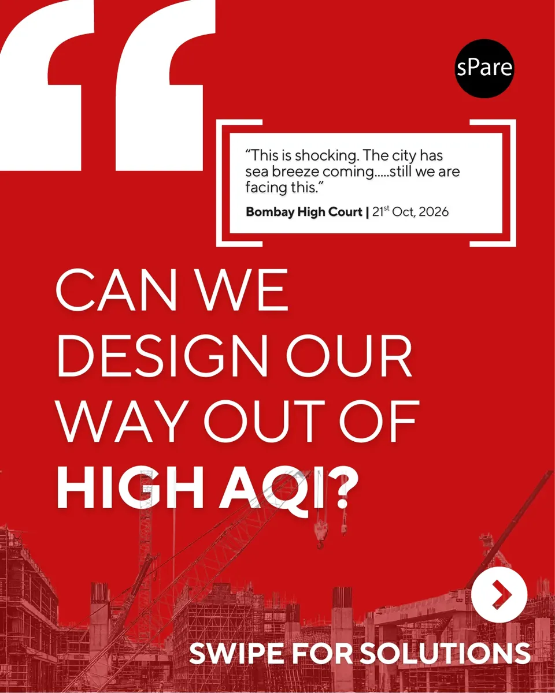
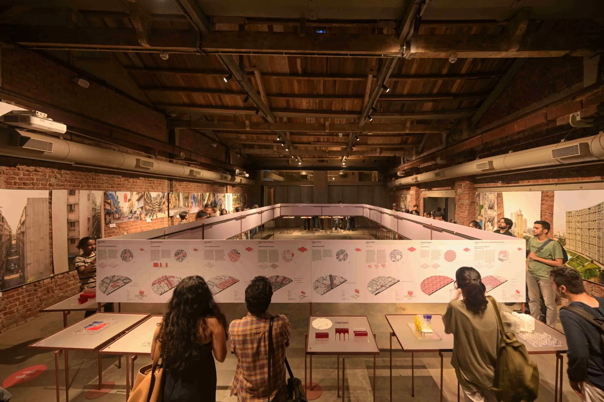
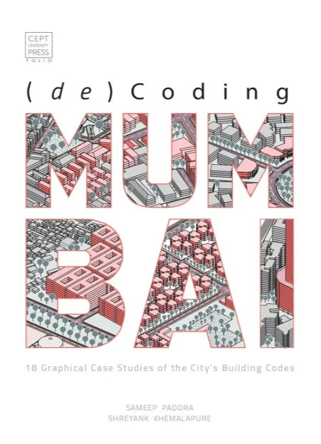
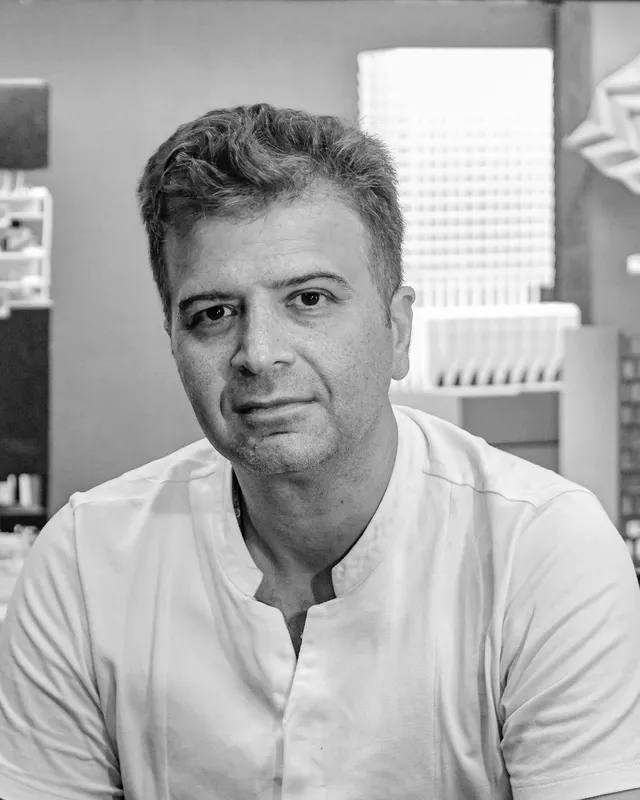
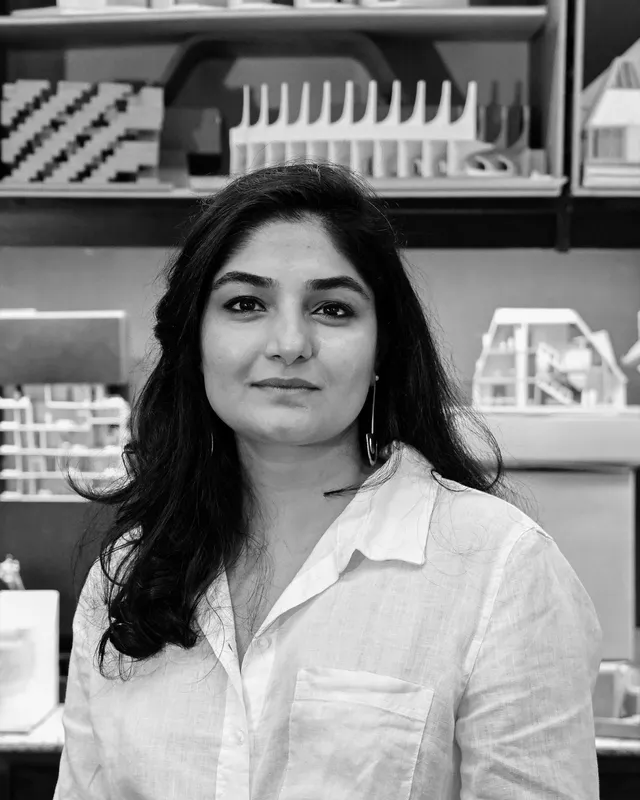

Research arm of Sameep Padora & Associates · Mumbai

Interactive atlasEvery existing and reserved open space in H/W Ward's Development Plan 2034, read plot by plot against what is on the ground.

Research seriesCan we design our way out of high AQI? Three levers for Mumbai: building codes, construction guidelines and legislation.

ExhibitionsIn the Name of Housing and (de)Coding Mumbai: sPare's housing research, shown in Mumbai, Pune, Ahmedabad and Delft.
 Film · Case study
Film · Case studyMumbai is a different city by the hour. Finding the streets and lots that fall empty, and turning them into places to play.
sP+a, sPare · ArchiTangle, Berlin. The first monograph on sP+a. Two decades of buildings made with local materials, skills and communities, read through project chapters such as Jetavan and essays by Peter Rich, Dick van Gameren, Marina Tabassum and Shreyank Khemalapure.
Sameep Padora, Shreyank Khemalapure. Recent buildings by India's younger practices, from SMVIT Library and Raj Sabhagruh to One Tree Hill and the Humayun's Tomb museum. Each is read by a guest writer and redrawn by sPare in analytic drawings that show how it is made.

Sameep Padora, Shreyank Khemalapure · CEPT University Press. Mumbai's form, read through its rules. Starting with the bye-laws written after the 1896 plague, 18 case studies trace how a century of building codes, shaped by politics and markets at home and abroad, produced the city's housing fabric, from planned colonies to today's podium towers.

Sameep Padora; photography Kunal Bhatia · nai010 publishers, Rotterdam. A handbook on one of India's most pressing questions: mass housing. Chawls, cooperative colonies and mixed-use blocks across Mumbai are documented in drawings, photographs by Kunal Bhatia and analytical models of space and services, as working references for affordable housing anywhere. A revised edition of In the Name of Housing (UDRI, 2016).

Sameep Padora founded sP+a in Mumbai in 2006 and sPare, its research arm, in 2017. Trained at the Academy of Architecture and Harvard GSD, he served as Dean of Architecture at CEPT University from 2023 to 2026. His work, recognised with the Beazley Design of the Year and Wallpaper* awards, explores frugal innovation and the regional in contemporary India.
Aparna Dhareshwar is an Associate Principal at sP+a, bringing over 25 years of experience across architecture, interiors and product design. Trained at the Academy of Architecture, she leads the studio's operations, client relationships and delivery, and has steered award-winning projects including Jetavan, the Maya Somaiya Library and the National War Museum competition entry.

Vami Koticha is an Associate Principal and Partner at sP+a, leading design strategy across institutional, cultural, housing and masterplanning work. A graduate of KRVIA, she has shaped several of the studio's best-known projects, from Jetavan to the Maya Somaiya Library. Her interests lie where computational design meets traditional typologies and local building methods.

Shreyank Khemalapure leads research at sPare and is an Associate Professor at CEPT University. A graduate of the Berlage, TU Delft, he works across architectural theory, history and criticism, with a focus on housing and urbanism, from Mumbai's housing to India's second cities. He is co-author, with Sameep Padora, of (de)Coding Mumbai.

Aayushi Joshi is an Associate at sP+a, leading teams on commercial, residential and hospitality projects across India. She holds a master's in Advanced Architectural Design from Columbia GSAPP. Before returning to the studio, she worked with Handel Architects and Barrett Architecture Studio in New York, and edited for GSAPP's publications office.

Palak Hurkat is an architect and urban researcher at sP+a, working at the intersection of design, publishing and public space. A CEPT University graduate with an exchange at TU Munich, she leads urban interventions through sPare and Bandra Collective. She is co-author of a forthcoming monograph on architect Hema Sankalia.
Nakshatra Punjabi is a Research Associate at sPare. A graduate of CEPT University's Bachelor of Architecture programme, she is interested in how practices work: the processes, decisions and cultures that shape the making of architecture. She is currently working on In Making, the studio's forthcoming monograph.
Between what Mumbai plans and what it builds lies a gap. We map it, measure it, and propose ways to close it.
sPare is the research arm of sP+a, founded by Sameep Padora. Its work began with In the Name of Housing, a study of Mumbai's historic housing types later published as How to Build an Indian House, and continued with (de)Coding Mumbai, on how building codes shape the city. Today it maps open space, air and the rules behind them.
Development plans, reservations and building rules, plot by plot.
Satellite imagery, site visits and open data: what is actually there.
A few numbers made clear, for citizens and the city alike.
Small, buildable steps that show what change looks like.